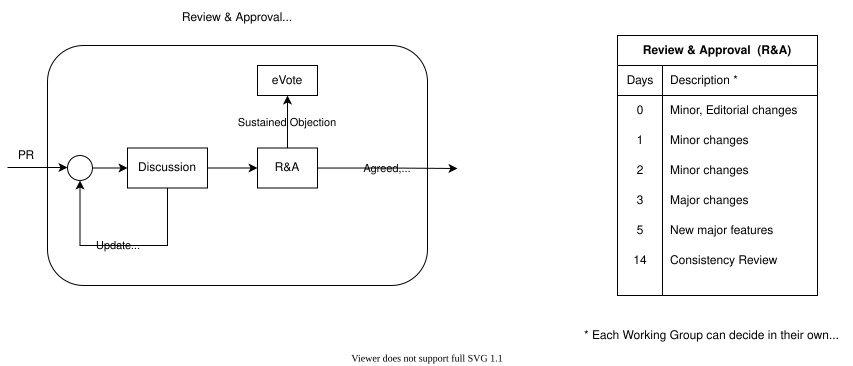
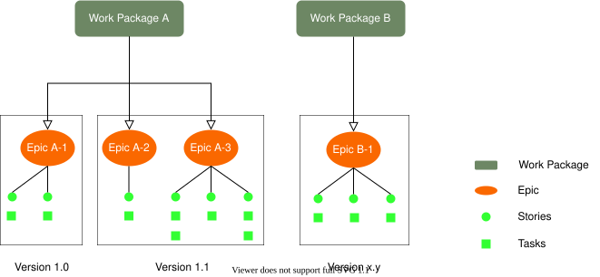
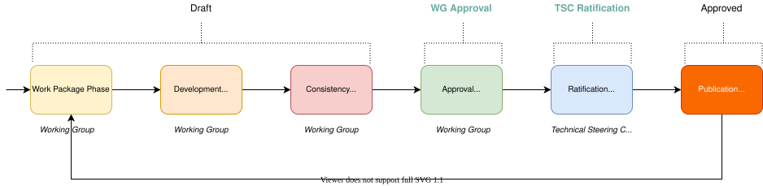
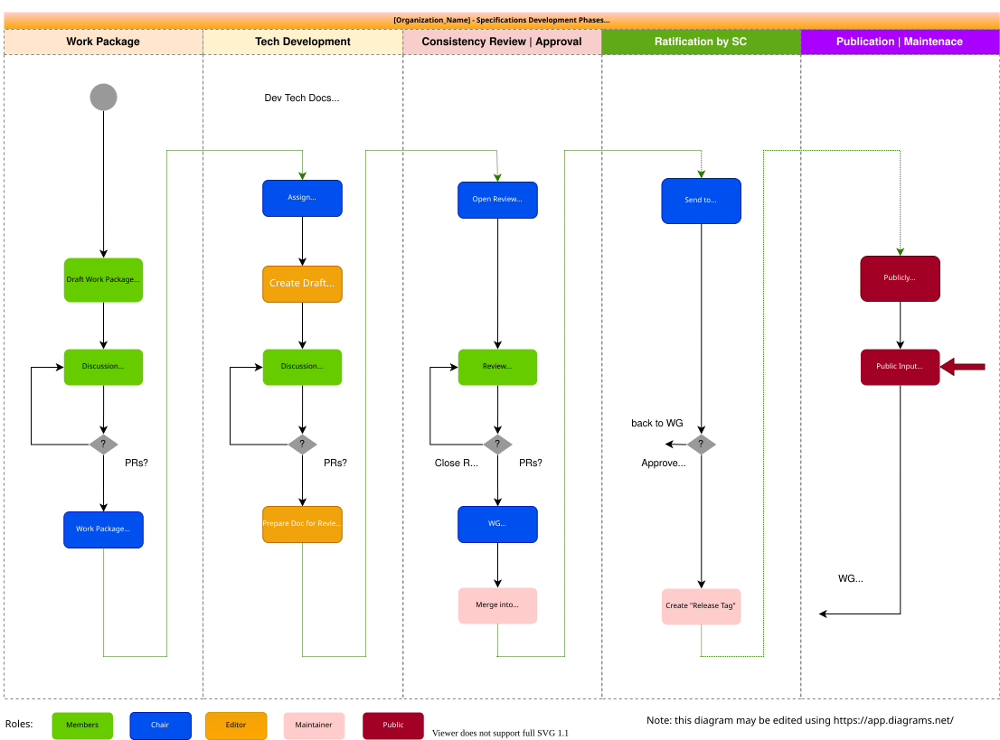
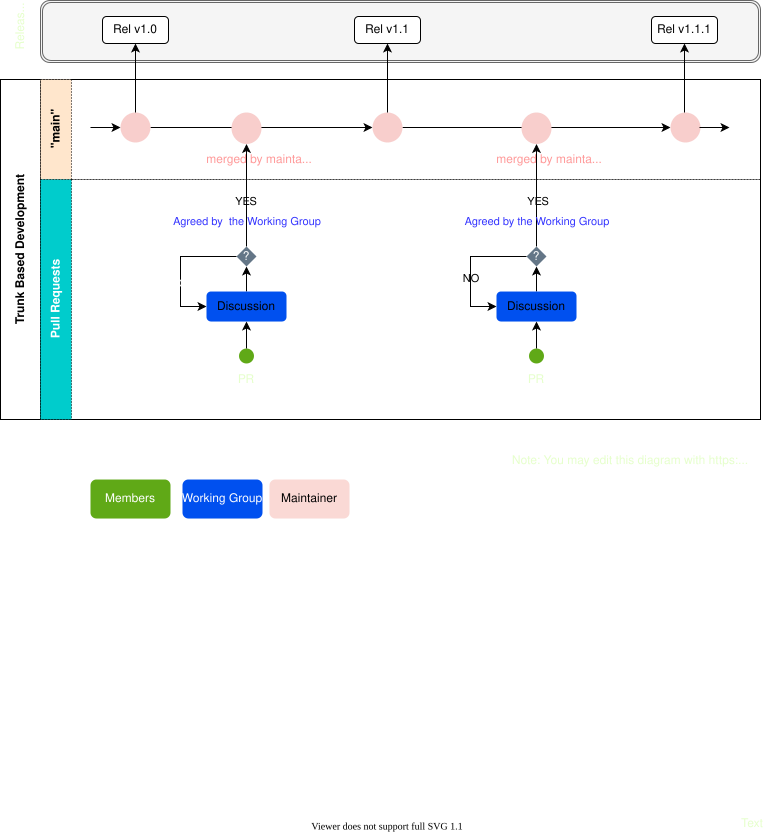
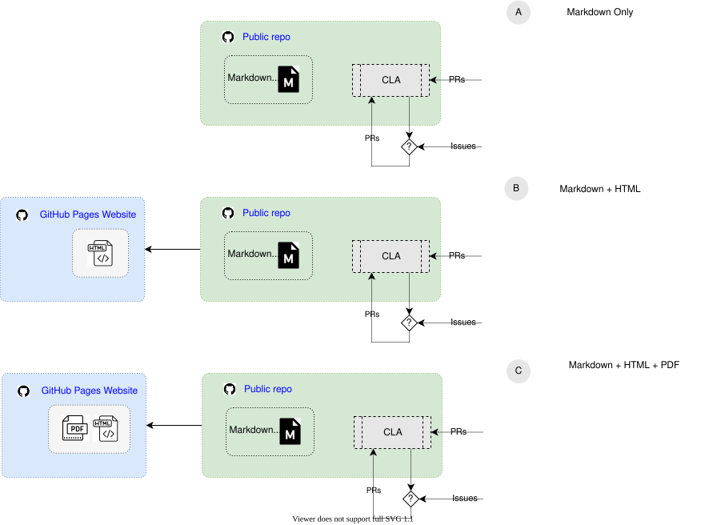
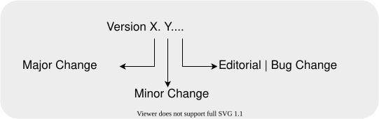

|
|
| The Way We Work |
| Draft Version: 0.0 |
| Standards Hub |
| development: 10 Nov 2022 01:30:00 rev: 340ae98 |
1. Scope
This document provides process guidelines based on best practice and practical implementations.
1.1. Introducion
This process is also called The Way We Work and contains the following documents:
This is a brief summary for each section:
Organization Governance The Organization is headed by the Steering Committee, which is formed by the members from the Steering Members. The Steering Committee meets once a
week, biweekly, monthlydeals with the day to day activities to the Organizaton. The Marketing Team is also formed by representatives from the Steering Members, it meets once aweek, biweekly, monthlyto discuss Marketing related topics.
This section provides a detailed list of benefits for each Membership level.
Companies that want to participate in a particular Working Group are required to sign the corresponding Working Group Charter. The current [Organization_Name] Working Group Charters are:
This section provides a description of what tasks and behaviour is expected by the different roles in the organization: chairs and vice-chairs, editor, mainteners, administrators and members in general.
Work Package describes the scope of the work and expected deliverables. It must be ratified by the Steering Committee and it is assigned to a Working Group.
This section suggest on how the Working Groups can approve Pull Requests; the final process is decided by each Working Group. The process is described in the CONTRIBUTING.md file available on each repository. In any case, this section recommends to follow the guidelines described in the Review & Approval Process
Once the Work Package has been defined, the Development work starts. After the development work is completed, the group will initiate the Consistency Review, which is a process to formally evaluate the documentation prior final approval by the Working Group. The Approval of the Specifications is performed by the Working Group after completing the Consistency Review. Once the Group has formally approved the work under development, the deriverables need to be ratified by the Organization Team. The ratification by the Technical Steering Committee triggers the Publication of the corresponding deliverables.
License on Technical Documents The section provides a License statement that needs to be inserted in all documents published by the Working Groups.
Documentation - Versioning The organization publishes its deliverables: technical documents and, or software code, following Semantic Versioning, which provides a simple criteria to decide the version - Vx.y.z - of content to be released by the Working Groups.
Copyright and Licensing Best Practise These rules are guidelines on how to write simple and easy to maintain Copyright statements. As well as how handle Software Licenses in the repositories of the organization.
Software License Policy This policy provides a set of Software Licenses rules that must be followed up by the contributors to the organization repositories.
Using Supermajority vote to achieve agreement
[Organization_Name] Approval Process which is used to approve contributions presented to the Working Groups [Organization_Name] Work Flow
In addition to the 2. Rules of Engagement there are two documents that provide further procedures:
CONTRIBUTING.md The CONTRIBUTING.md is a text file available in each [Organization_Name] repository. This file is created and approved by the corresponding [Organization_Name] Working Group. Its purpose is to describe how contribute to a particular repository. It can be adjusted as needed from one repository to another, even within the same Working Group. See an example of a CONTRIBUTING.md file.
Release Planning It is a set of milestones that indicate what the group is planning to deliver and by when. Each Working Group should create and maintain its own Release Planning Document. This document in its simplest form, is a table (a Release Roadmap), that contains version and release date. It can be extended with the list of features that will be released. See an example of a Release Planning table.
2. Rules of Engagement
The scope of this specification is to define the operations and processes of the [Organization_Name] ([Organization_Abbreviation]).
The [Organization_Name] (Organization Mission).
3. Terminology and Conventions
3.1. Language
The default language for writting [Organization_Abbreviation] documentation is the American English, English (United States).
3.2. Conventions
The keywords “MUST”, “MUST NOT”, “REQUIRED”, “SHALL”, “SHALL NOT”, “SHOULD”, “SHOULD NOT”, “RECOMMENDED”, “MAY”, and “OPTIONAL” in this document are to be interpreted as described in [RFC2119].
3.3. Definitions
Note: To Be Deleted
Every term used in the document should be defined in this section.| Committee Team | A group chartered by the Steering Committee to perform specific support tasks |
| Editor(s) | A member of a Working Group who is responsible to edit and maintain a document. |
| Epic | It is a component inside of a Work Package. It could be a feature, customer request or business requirement. |
| e-Vote | Electronic Vote. |
| Issue(s) | An important topic or problem for debate or discussion. Normally, in [Organization_Abbreviation] Issues are tracked in Github. |
| Maintainer | [Organization_Abbreviation] member that has been selected by the Working Group as a coordinator for the Working Group activies. A Maintainer is the person (or persons) *responsible for the direction or movement* of a [Organization_Name] Working Group. He/she/they are committed to improving, driving, and ensuring an outcome. A Maintainer doesn’t necessarily have to be someone who writes the data specification. It could be someone who’s done a lot of work evangelizing the [Organization_Name], or written documentation that made [Organization_Abbreviation] more accessible to others. Regardless of what they do day-to-day, a Maintainer is probably someone who feels responsibility over the direction of the project and is committed to improving it. |
| Member(s) | A person that belongs to a company that has signed [Organization_Abbreviation] Membership Application and Charter(s) and have access to [Organization_Abbreviation] resources. |
| Membership Application | A legal document that provides legal information about rights and obligations of being a member company of [Organization_Abbreviation]. |
| Participant | A Participant is any individual creating content or commenting on an issue or pull request. |
| Project Charter | A legal document that describes the [Organization_Abbreviation] Project. |
| Pull Request | It indicates what changes are suggested to a branch in a repository on GitHub. |
| Release | It is the distribution of the final version of a document or application. |
| Review & Approval | A special process that is used to convey agreement or disagrement on a topic. |
| Semantic Versioning | It is a versioning scheme to convey backwards or not backwards compatibility of a release. |
| Source Code | A text listing of commands to be compiled or assembled into an executable computer program. |
| Specification(s) | An act of describing or identifying something precisely or of stating a precise requirement. |
| Steering Committee | A committee that decides on the priorities or order of business on [Organization_Abbreviation]. |
| Working Group | It is a group of expertes working together to achieve predefined objectives. The group formalize its objectives and goals in a formal document, the Working Group Charter. |
| Working Group Maintainer | A person selected by the Working Group which primary role is to facilitate consensus-building among the group members. |
| Working Group Charter | A document that contains the scope, objectives and goals of a particular group. |
| Work Package | It is a group of related tasks within a project. Each Work Package can be broken down into one or more Epics. |
Kindly consult [Organization_Abbreviation] Dictionary for more definitions used in this document.
3.4. Abbreviations
| AD | Architecture Document |
| IPR | Intelectual Property Rights |
| WG | Working Group |
| [Organization_Abbreviation] | [Organization_Name] |
| PR | Pull Request |
| REQ | Requirements |
| RD | Requirement Document |
| SC | Steering Committee |
| SUP | Supporting Document |
| TS | Technical Specification |
4. Introduction
5. [Organization_Abbreviation] Resources
| System | Description |
|---|---|
| Website | Public website dedicated to [Organization_Abbreviation] Consortium content. |
| 17.3. GitHub | [Organization_Abbreviation] GitHub repositories open to the public. |
| Technical Publication | Technical Specifications created by [Organization_Name]. |
| Membership Enrolment | Process steps to join [Organization_Abbreviation]. |
| Meeting Calendar | Working Group I, (WG_1), and Working Group II, (WG_2) , ... |
| Mailing List | Mailing List |
| Wiki | Wiki |
| Members Onboarding | Welcome to [Organization_Abbreviation]. |
| Working Group Charters | GitHub repository that contains WG charters and Membership Application documemntation. |
| 2. Rules of Engagement | [Organization_Abbreviation] process and rules. |
| CONTRIBUTING | Each repository contains a CONTRIBUTING.md file that explains how to contribute on that particular repository. |
6. Governance
6.1. Membership Levels
- Strategic
- General
- Associate
See Table: 8.-1 Membership Benefits
6.2. Organization Structure
Note:
The technical Working Groups are open to all.
The Strategy WG and the [Organization_Abbreviation] Steering Committee are open to General and Strategic members.
The [Organization_Abbreviation] Steering Committee approves by up or down vote the final specifications.
Ensures alignment between working groups.
Determines the allocation of resources
Roles can be found on the next page
6.2.1. Steering Committee
- One of the more important duties of the Steering Committee is the approval of the Specifications and other works produced as a consensus product of the Working Groups.
- The Steering Committee is comprised of a representative of the founding members of the
[Organization_Abbreviation]and has a single primary member representing each company. - Each Steering Committee meeting is called on a regular interval, although this interval can be ad-hoc as long as the proper notice is given.
- Proper notice of the Steering Committee (SC) meeting is given to its representatives including an agenda with the topics to be voted by the SC having been prepared with a proper notice period, typically one week.
- A meeting of the Steering Committee makers presumably has a quorum.
- Motions are made and accepted by a vote of the designated Steering Committee members. Members may debate the motion, make changes if thought fit, accept or reject the motion. It is an important principle that there is an opportunity for questions and clarifications of the motion in the process.
- The votes are taken only by the appointed representatives of the Steering Committee.
- Minutes of the meeting are taken to record the votes and their outcomes.
Note:
Specifications, especially important specifications, are subject to challenges from others. Having a well understood, well documented, and neutral process for their creation and approval demonstrates consistency in process and makes the challenges much more complicated for those who might try to make mischief in the future.
6.2.2. Communications Team
- Each Steering Member will be represented in the
[Organization_Abbreviation]Communication Team by one representative only. - The Communication Team typically focuses on the following:
- manages internal and external communications;
- is responsible for press releases;
- maintenance of the website;
- coordinates participation at congresses; and
- manages the communication strategy.
6.2.3. Working Groups (WG)
Working Groups (WGs) that are chartered by the Steering Committee to handle one or more Work Packages:
- Working Group I, (WG_1) and
- Working Group II, (WG_2)
7. What to Expect from Organization Roles
7.1. From Participants
Note:
A Participant is any individual creating content or commenting on an issue or pull request.
- Participants MUST read the Project documentation (e.g.: contribution guidelines, readme, and release planning file) before attenting to submit an Issue or Pull Request
- Participants are not allowed to fork a project to build a feature that has been rejected by the Working Group
Note: from [Organization_Abbreviation] Scope & Governance
1.3. Participants. “Participants” are those that have made Contributions to the Working Group
subject to the Community Specification License.7.2. From Editors
Note:
An Editor is a subset of Participants who have been given write access to the repository. They will advance the day-to-day evolution of the specification
Note: from [Organization_Abbreviation] Scope & Governance
1.2. Editor. “Editors” are responsible for ensuring that the contents of the document accurately reflect the decisions
that have been made by the group, and that the specification adheres to formatting and content guidelines.
Each Working Group will designate an Editor or Editors for that Working Group.
A Working Group may select a new Editor or Editors upon Approval of the Working Group Participants.7.3. From Maintainers
Note: from [Organization_Abbreviation] Scope & Governance
1.1. Maintainer. “Maintainers” are responsible for organizing activities around developing, maintaining, and updating the specification(s) developed by the Working Group. Maintainers are also responsible for determining consensus and coordinating appeals. Each Working Group will designate one or more Maintainer for that Working Group. A Working Group may select a new or additional Maintainer(s) upon Approval of the Working Group Participants.
- In performing their tasks, Working Group Maintainers SHALL maintain strict impartiality and act in the interest of the Organization.
- Maintainers MAY limit the amount of time allocated to a particular agenda item or discussion point.
- Maintainers SHALL, after a reasonable period of discussion time, use means to quickly reach a decision including (but not limited to):
- a statement of the Maintainers’s view of group consensus, which shall be accepted by the group if there are no objections.
- assignment of action items to progress the issue in a short a time period as possible.
- invite single or few objectors to no longer sustain their objections.
- informal voting.
- formal voting.
- Maintainers MAY require that new information be provided about an issue before earlier decisions can be reopened/revisited.
- The work and progress of the group is appropriately communicated through regular status reports to the SC.
- The Maintainer MAY delegate tasks to other Maintainers, including chairing the group as and when necessary.
- The Maintainer MUST keep the project documentation up to date (e.g.: contributing, readme and release planning documents)
- The Maintainer MUST apply "Review & Approval" process to contributions submitted by the Working Group members
- The Maintainer SHOULD use GitHub "Labels" to indicate the type of “Review & Approval” assigned to each Pull Request
- The Maintainer SHOULD keep communications with the members via GitHub Issues or Pull Requests rather than one to one communications
- The Maintainer SHOULD close contributions that do not follow the rules, or meet the right quality or are related to features that are in the scope of the Release Version under development
8. Membership Benefits
| Strategic | General | Associte | [Organization_Abbreviation] Community | ||||
|---|---|---|---|---|---|---|---|
| Pricing | |||||||
| Price | $XXX | $XXX | $XXX/td> | $0K | |||
| Leadership | |||||||
| Eligible to participate in the Steering Committee | Yes | Based on merit | Based on merit | No | |||
| Eligible for a Working Group Maintainer position | Yes | ||||||
| Eligible for a Working Group Co-Maintainer position | Yes | ||||||
| Participation | |||||||
| Use the output of working groups | Yes | Yes | Yes | Yes | |||
| Stay up-to-date on [Organization_Abbreviation] progress & innovations | Yes | Yes | Yes | Yes | |||
| Eligible to join a Working Group | Yes | Yes | Yes | No | |||
| Eligible to join the Steering Committee | Yes | No | No | No | |||
| Eligible to join the Communications Team | Yes | No | No | No | |||
| Contribution | |||||||
| Contribute ideas to the member alliance | Yes | Yes | Yes | Yes | |||
| Access in-depth information on working groups | Yes | Yes | Yes | No | |||
| Contribute to working groups | Yes | Yes | Yes | No | |||
| Influence working group solutions | Yes | Yes | Yes | No | |||
| Propose new working groups | Yes | Yes | Yes | No | |||
| Influence working group outcomes | Yes | Yes | Yes | No | |||
| May propose a Work Package | Yes | Yes | Yes | Yes | |||
| Counted towards minimum support quorum of a Work Package | Yes | Yes | No | No | |||
| Voting | |||||||
| Approval of Publications, Working Group formation and [Organization_Abbreviation] governance | Yes | No | No | No | |||
| Vote in a Supermajority vote | Yes | Yes | No | No | |||
| Vote in an informal technical vote | Yes | Yes | Yes | No | |||
| Participate in consensus polls (R&A) | Yes | Yes | Yes | No | |||
| Access to Documentation | |||||||
| Access to common MS Teams areas | Yes | Yes | Yes | No | |||
| Access to restricted MS Teams areas and private GitHub repositories | Yes | Yes | Yes | No | |||
| Access to Meetings | |||||||
| Attend Work Group meetings (F2F, conference calls, interim) | Yes | Yes | Yes | No | |||
| Attend special events | seminars | Yes | Yes | Yes | TBD | |||
| Process Administration | |||||||
| May propose the creation of a Working Group | Yes | Yes | Yes | No | |||
| May appeal on technical issues | Yes | Yes | No | No | |||
| May appeal on procedural issues | Yes | Yes | No | No | |||
9. Meetings
- WGs are encouraged to schedule regular conference calls.
- The Meetings MUST be announced at least, 7 days in advance for conference calls, and 1 month for face to face meetings.
- All the Organization members are contractually bound to the IPR policy under terms of the Membership Application and these IPR Guidelines must be followed.
- Meetings SHALL have an antitrust statement and an IPR call where a reminder of the IPR policy and the duties and obligations of members is provided.
- A meeting attendee list MUST be produced for each meeting. This is necessary to determine which members can vote in a Supermajority vote.
10. Technical Decision Making
10.1. Decision Making
Note: the following bullet points needs to be reviewed by the group: 3.1, 3.1 and 3.2
This is to ensure that the fact of having memberships levels doesn't contradicts these rulesNote: from [Organization_Abbreviation] Scope & Governance
2. Decision Making.
2.1. Consensus-Based Decision Making. Working Groups make decisions through a consensus process (“Approval” or “Approved”). While the agreement of all Participants is preferred, it is not required for consensus. Rather, the Maintainer will determine consensus based on their good faith consideration of a number of factors, including the dominant view of the Working Group Participants and nature of support and objections. The Maintainer will document evidence of consensus in accordance with these requirements. Consensus will not be deemed to have been met in the event of a sustained objection from one or more Working Group participants.
2.2. Appeal Process. Decisions may be appealed via a pull request or an issue, and that appeal will be considered by the Maintainer in good faith, who will respond in writing within a reasonable time.
3. Ways of Working.
Inspired by American National Standards Institute’s (ANSI) Essential Requirements for Due Process, Community Specification Working Groups must adhere to consensus-based due process requirements. These requirements apply to activities related to the development of consensus for approval, revision, reaffirmation, and withdrawal of Community Specifications. Due process means that any person (organization, company, government agency, individual, etc.) with a direct and material interest has a right to participate by: a) expressing a position and its basis, b) having that position considered, and c) having the right to appeal. Due process allows for equity and fair play. The following constitute the minimum acceptable due process requirements for the development of consensus.
3.1. Openness. Participation shall be open to all persons who are directly and materially affected by the activity in question. There shall be no undue financial barriers to participation. Voting membership on the consensus body shall not be conditional upon membership in any organization, nor unreasonably restricted on the basis of technical qualifications or other such requirements. Membership in a Working Group’s parent organization, if any, may be required.
3.2. Lack of Dominance. The development process shall not be dominated by any single interest category, individual or organization. Dominance means a position or exercise of dominant authority, leadership, or influence by reason of superior leverage, strength, or representation to the exclusion of fair and equitable consideration of other viewpoints.
3.3. Balance. The development process should have a balance of interests. Participants from diverse interest categories shall be sought with the objective of achieving balance.
3.4. Coordination and Harmonization. Good faith efforts shall be made to resolve potential conflicts between and among deliverables developed under this Working Group and existing industry standards.
3.5. Consideration of Views and Objections. Prompt consideration shall be given to the written views and objections of all Participants.
3.6. Written procedures. This governance document and other materials documenting the Community Specification development process shall be available to any interested person.As part of their responsibilities defined in from WG Maintainers, Maintaniers need to ensure efficient and effective decision-making:
- The decision making process in WGs is intended to be as inclusive as possible.
- WGs shall attempt to use consensus to make decisions.
- If consensus cannot be reached, voting mechanisms MAY be used.
- Formal notice SHALL be given for decision making, e.g.:
- Inclusion of a document on an agenda, proposing a specific decision to be taken (e.g. Pull Request).
- Inclusion of an item directly in the agenda (e.g. proposed next meeting date).
- Items proposed for approval via the group mailing list (e.g. agreement a document revision).
- Inclusion of a document for decision in an electronic Review, Comment and Approval event
- Inclusion of a document for decision in an e-vote (Supermajority) vote.
The above list is not exhaustive.
- There SHALL be no distinction in the decision-making merit of real-time or non-real-time meetings.
- In real-time meetings, consensus can be determined by receiving no sustained objections to a proposal.
- In non-real-time meetings, consensus SHOULD be developed using Review, Comment and Agreement periods, e.g. using Review and Approval
- Proposals SHALL be available for a given period.
10.2. Seeking Consensus
- Groups shall endeavour to reach consensus on all decisions.
- Informal methods of reaching consensus are encouraged (e.g. a show of hands).
- Groups SHOULD attempt to ensure contributions relating to the same subject matter are considered together before being disposed.
- However the Maintainer SHALL ensure that progress is not delayed by unavailable contributions or participants.
- Agreement SHALL be sought in all forms of meeting.
10.3. Handling objections when seeking consensus
- Objections from a small minority SHOULD be minuted and the objecting delegates SHOULD be questioned if having their objections minuted is sufficient and they agree to not sustain their objections.
- If such agreements are secured, then there is consensus for approving the proposal.
- If such agreements are not secured, then the proposal is not agreed and further action SHALL be taken (e.g. the proposal is withdrawn, updated, or voted on).
- Members are discouraged from sustaining their objections when it is clear that they would be overruled by a vote were one to take place.
- In real-time meetings, consensus can be determined by receiving no sustained objections to a proposal.
- Efforts to immediately resolve or record objections can be taken to attempt to achieve consensus.
- Where attendance is sparse when viewed from normal participation levels, potentially controversial proposals SHOULD be made available to the broader membership.
- The Maintainer is responsible for ensuring such opportunity for participation in the decision making process.
- Sparsely attended meetings SHOULD NOT be used to drive through proposals that would not have broad support.
- Following a decision-making meeting, a summary of decisions and document dispositions SHALL be published as soon as is practical.
- This will be addressed if the meeting minutes are available in a timely fashion.
- When there is insufficient time for review in a real-time meeting, non-real-time consensus approaches SHOULD be considered.
- In non-real time meetings consensus SHOULD be developed by using Review and Approval periods.
- Using the group mailing list
- Using GitHub "Review and Approval" label
- Proposals SHALL be available for a given period.
11. Using Supermajority vote to achieve agreement
11.1. Phrasing of Voting Questions
- The Maintainer ensures that questions to be voted upon SHALL be phrased in a concise and unambiguous manner.
- Questions SHOULD NOT be phrased as the “The group SHALL not do xyz”. Examples of appropriate questions are:
- SHALL the group agree the Specification?
- SHALL the liaison be approved?
- SHALL the new Work Package be approved?
- SHALL the existing Work Package be stopped?
- If the issue is to choose between two options (i.e. A or B), an example of the appropriate question may be:
- SHALL the group agree Option A or Option B?
- The option receiving no less than 3/4 of the Supermajority Votes SHALL be the decision of the group.
- If the issue is to choose between three or more options, the group SHOULD use informal voting to reduce the number of options to two, and then use formal voting, if necessary.
11.2. Voting on Technical Issues
Note: Supermajority Vote
Note: Define Supermajority- Before voting, a clear definition of the issues SHALL be provided by the Maintainer.
- Members eligible to vote, SHALL only be entitled to one vote each.
- Each member MAY cast its vote as often as it wishes, and the last vote it casts counts.
- Voting MAY be performed electronically.
- Voting MAY be performed by show of hands and members announcing their vote verbally one by one, or paper ballots.
- The result of the vote SHALL be recorded in the meeting minutes.
- Groups MAY use informal voting to reach consensus. If the Group is still unable to reach consensus, then a formal vote MAY be taken.
- Each member’s electronic vote SHALL be electronically acknowledged to confirm participation in the vote.
- The voting period for proposals are:
- In-person-meetings require at least 30 days prior written notice
- Teleconference meetings require at least 7 days prior written notice
- Electronic voting MUST remain open for no less than 7 days.
12. Approval Process

In the Standards Development Organizations (SDOs) the approval or rejection of a contribution follows a democratic process; the majority. This differs from an Open Source organization that normally follows a meritocratic process where the Maintainer decides what to accept of reject. If a person doesn’t like the decision that her contribution is rejected, then she can “fork” the project.
The goal for an SDO is to reach interoperability, therefore “forking” is not the solution to a technical dispute. If there is a sustainable objection in a contribution the resolution is via a vote, see Seeking Consensus.
The Review & Approval process implies that all the contributions need to be accepted by the Working Group.
12.1. Review & Approval Process
Review period:
- Period of time during which the contribution will be under review before being merged.
- The period can be: 0, 1, 2, 3, 5, 7, 14 days
- 0 days imply that the contribution is merged without Working Group review
- Period of time during which the contribution will be under review before being merged.
Comments or Objections:
- During the Review & Approval process members MAY raise comments or objections.
Comments MUST be taken in consideration by the Working Group, but they MAY be dismissed if they group thinks that are not relevant.
Objections MUST be taken in consideration and they cannot be dismissed by the Working Group without being reviewed.
If a contribution receives an objection the group MUST resolve the issue, with the person that raise the objection, before deciding the status of the contribution. If the objection is sustained, meaning the person doesn’t remove it, then the group will have to recur to a vote to resolve it.
- During the Review & Approval process members MAY raise comments or objections.
Approval Criteria:
- A contribution is considered approved and therefore it can be merged if:
- The contribution has not received any sustainable objection during the review period, AND
- At least 3 reviewers have indicated that they agree with the contribution
- If a sustained objection is received, the contribution cannot be merged, even if 3 or more contributors agreed with the contribution.
- If during the review period a contribution receives a comment, it is up to the group or maintainer to accept the comment or not. In any case, in order to merge the contribution at least 3 reviewers MUST indicate that they agree with the contribution.
- A contribution is considered approved and therefore it can be merged if:
13. [Organization_Abbreviation] Process Flows
13.1. Work Packages

13.1.1. Work Package
- The Work Package (WP) SHALL describe the scope and expected deliverables and SHALL require WG approval
- WPs are the means by which release packages (version x.y.z) are defined
13.1.1.1. Epics
- It could be a feature, customer request or business requirement
- It is recommendable to define a list of Epics that will be formed the release package for the corresponding Work Package
- The WG SHOULD define a placeholder for each Epic with few lines of description
- The Epics can be broken down in user stories and tasks which are not defined in detail at the creation of the Work Package
13.2. Technical Specifications Life Cycle
Note: from [Organization_Abbreviation] Scope & Governance
4. Specification Development Process.
4.1. Pre-Draft. Any Participant may submit a proposed initial draft document as a candidate Draft Specification of that Working Group. The Maintainer will designate each submission as a “Pre-Draft” document.
4.2. Draft. Each Pre-Draft document of a Working Group must first be Approved to become a ”Draft Specification”. Once the Working Group approves a document as a Draft Specification, the Draft Specification becomes the basis for all going forward work on that specification.
4.3. Working Group Approval. Once a Working Group believes it has achieved the objectives for its specification as described in the Scope, it will submit it to the Steering Committee for its approval. Any Draft Specification approved by vote of the Steering Committee becomes an “Approved Specification”.
4.4. Publication and Submission. Upon the designation of a Draft Specification as an Approved Specification by the Steering Committee, the Maintainer will publish the Approved Specification in a manner agreed upon by the Steering Committee (i.e., Working Group Participant only location, publicly available location, Working Group maintained website, Working Group member website, etc.). The publication of an Approved Specification in a publicly accessible manner must include the terms under which the Approved Specification is being made available.
4.5. Submissions to Standards Bodies. The Governing Board of the LF Energy Foundation (the “Governing Board”) may submit a Draft Specification or Approved Specification to another standards development organization by vote. No Draft Specification or Approved Specification may be submitted to another standards development organization without the vote of the Governing Board. Upon an affirmative vote of the Governing Board regarding such a submission, the applicable Maintainer or Maintainers, or any other individuals so directed by the Governing Board, will coordinate the submission of the applicable Draft Specification or Approved Specification to the other standards development organization as directed by the Governing Board. Working Group Participants that developed that Draft Specification or Approved Specification agree to grant the copyright rights necessary to make those submissions.
4.6 Steering Committee. The Steering Committee is responsible for (a) approval of any Draft Specification as an Approved Specification and (b) alignment among each of the Working Groups of the [Organization_Name] project.
4.7. Voting of the Steering Committee and Strategy Committee. In any vote or Approval before the Steering Committee or Strategy Committee the affirmative vote of at least 50% of the voting members of the Steering Committee or Strategy Committee. The voting members of the Steering Committee and Strategy Committee consist of one appointee from each General Member and each Strategic Member of the LF Energy Foundation of the Linux Foundation.
In this section the diagram below depictures the development phases of technical documents.
| Phase | Description |
|---|---|
| Work Package | In this phase the group agrees the scope of the work to be developed. Any member can provide a new Work Package proposal, the document is discussed among the group and further elaborated. The group will vote whether the Work Package is formally approved and endorsed by the majority of the group or rejected. If the proposal is approved, the Work Package is moved to the next phase, Technical Development. |
| Development | A Technical Specification MAY be composed of one or more documents:
|
| Consistency Review | In this phase, the document(s) developed by the WG are formally reviewed by the group. A Review period is open for members to submit their comments. After this period, the Working Group will address the issues received. |
| WG Approval | Once the WG completes the Consistency Review the document(s) MUST be agreed by the WG (in a Review & Approval) before sending the document(s) to the Steering Committee for formal Ratification. |
| Ratification | Once the WG approves the document(s), the document(s) are sent to the Steering Committee for Ratification. |
| Publication | Maintenance | Upon Steering Committee Ratification, the document(s) are ready for Publication.
|

13.3. GitHub Flows
It is suggested to follow the principles of Trunk Based Development whenever is possible.

| Branch | Description |
|---|---|
| Rel vX.Y.Z | Release-tag's contain all the different versions of the Technical Specifications that have been approved by the Working Group and ratified by the Technical Steering Committee. The name of the release tag will follow [Semantic Versioning](#semantic-versioning) principles. |
| main | This branch contains the latest version of the Technical Specfication approved by the Working Group. Its content will be moved into a release-tag, afer the Consistency Review and Technical Steering Committee Ratification phases. |
13.4. GitHub Access Rights
| Role | Access Rights |
|---|---|
| Participants | TRIAGE - Can read and clone this repository. Can also manage issues and pull requests. |
| Editors | WRITE - Can read, clone, and push to this repository. Can also manage issues and pull requests. |
| Maintainer | ADMINISTRATOR - Can read, clone, and push to this repository. They can also manage issues, pull requests, and some repository settings. |
14. Publication
There are at least three different options to publish content using GitHub:

15. Documentation
15.1. Semantic Versioning

| Field | Use | Description |
|---|---|---|
| X | Major Version Indicator | This mandatory field SHALL identify the major version of the document as determined by the WG. Major versions contain major feature additions; MAY contain incompatibilities with previous document or specification revisions; and MAY change, drop, or replace existing interfaces. Initial releases are “1_0”. |
| Y | Minor Version Indicator | Minor version of the document. This mandatory field SHALL identify the minor version of the document. It is incremented every time a minor change is made to the approved document version. Minor versions MAY contain minor feature additions, be compatible with the preceding Major_Minor specification revision, and MAY provide evolving interfaces. The initial minor release for any major release is “0”, i.e. 1_0 |
| Z | Service Indicator | Service indicator for the document. Incremented every time a corrective update is made to the Approved (not draft) document version by the WG. This field is OPTIONAL, and SHALL be provided whenever a service release of the document is made. The first service indicator release SHALL be “_1” for any Major_Minor release. Service indicators are intended to be compatible with the Major_Minor release they relate to but add bug fixes. No new functions will be added through the release of Service Indicators. |
16. Intelectual Property Rights
16.1. Copyright
This section provides a recommendation based on the best practice implemented by other projects.
Most LF project communities do not require or recommend that every contributor include their copyright notice in contributed files.
Instead, many LF Project communities recommend using a more general statement in a form similar to the following: (choose one)
Copyright The [Organization_Name] Authors.Copyright The [Organization_Name] Contributors.Copyright Contributors to the XYZ project.
These statements are intended to communicate the followig:
- the work is copyrighted;
- the contributors of the code licensed it, but retain ownership of their copyrights; and
- it was licensed for distribution as part of the
[Organization_Name].
With any of the above statements, the project avoids having to maintain lists of names of the authors or copyright holders, years or ranges of years, and variations on the (c) symbol. This aims to minimize the burden on the contributors and maintainers.
This section provides a recommended format for easy of use, but it is not mandated.
Note: You may consider to discuss with your legal department about whether they require you to include a copyright notice identifying the employer as the copyright holder in contributions. Many of LF members' legal departments have already approved the above recommended pratice.
16.1.1. Reasons to Avoid Listing Copyright Holders
These are some of the reasons why [Organization_Abbreviation] does not recommend trying to list every copyright holder for contributions to every file:
- Copyright notices are not mandatory in order for the contributor to retain ownership of their copyright.
- Copyright notices are rarely kept up to date as documentation evolves, resulting inaccurate statements.
- Trying to keep notices up to date, or to correct notices that have become inaccurate, increases the burden on editors and maintainers without tangible benefit.
- Editors and maintainers often do not want to have to worry about e.g. whether a minor contribution (such as a type fix) means that a new copyright notice should be added.
16.1.2. Other Copyright Rules
- If your contribution contains content from a third party source who didn't contribute it themselves, then you should not add the notice above.
- You should not change or remove someone else's copyright notice unless they have expressly (in writting) permitted you to do so.
16.2. Licenses
This section provides a recommendation on how to communicate software or document licenses information in a project.
16.2.1. Software Code Licenses
Ideally, the project SHOULD communicate the software license information via three different metods:
- In the README file
- Inside of the repository with a
License.txtdocument - Inside of each code file created by the group
16.2.2. Statement in README File
Insert in the README file the MIT License:

The README file will display:
In addition, it is recommended to include a plain text statement of the license in the README file, for accessibility purposes as well as enabling parsing by automated tooling. This can be done by including a "License" section with:
- This project is licensed under the MIT license.
16.2.3. License File in the Repository
Insert in the repository a file called License.txt.
The Maintainer can copy the corresponding license file from the templates/license repository and upload it to the project repository.
16.2.4. License Reference in each Source Code File
The recommendation is that projects SHOULD use SPDX short-form license identifiers in all source code and documentation files that are original to the project.
Each source code created by the project SHOULD have one of these SPDX license identifiers: (depending on the type of source code license allocated to the project)
- for an MIT license:
# SPDX-License-Identifier: MIT
# Copyright Contributors to the [Organization_Name]If the project needs to include source code or documents from a different upstream project, the recommendation is to retain those files in unmodified form (don't add identifiers).
Also consider to:
- keep these files in sync with the upstream project
- ask the upstream project to insert the identifiers on their source code files / documents.
16.3. [Organization_Name] Software License Policy
This policy is intended to assist [Organization_Name] Technical Working Groups to handle Software Licenses in the Projects.
16.3.1. Recommended SafeGuards
1. Escalation Path
- Any question about licensing should be resolved by the Working Group (WG), if the WG cannot resolve it, then the question can be sent to the Technical Steering Committee (TSC)
- LF doesn’t provide legal advice or comments about license compatibility (unless LF identifies some clear incompatibilities)
- The Steering members may need to involve their Legal Counsel to make a license decision
- Only the TSC can decide if a component created by the Project can be delivered under a different license than the Project License
2. Linked Libraries & 3 Party Software
- It is not recommended to pull software code, under different license than the Project License, into the project repository. Use linked libraries instead.
- If 3rd party software is embedded, it should be under the Project License. If different licenses are used, then create a NOTICE file listing all the 3rd party license notice.
- As a rule, if a software code developed by
[Organization_Name]has an external dependency to a code distributed under GPL 2.0, then[Organization_Name]members need to consult with their legal counsel to decide under what license the[Organization_Name]software code should be released. In other words, if the code developed by[Organization_Name]doesn’t work without the reference to the external code under GPL 2.0, then the license to release the[Organization_Name]code should be evaluated.
3. License Compatibility
- Any upstream license needs to be compatible with the Project License
- Any copyleft license inserted in a project repository needs to be flagged to the Organization Team
4. Binary Distribution
- It is a good practice to point users to the libraries so they can compile them on their own
- If the group decides to ship binaries, the binaries should be ONLY for the code developed under the Project License.
- If there are any other binaries under different license, then each binary should be distributed in its own files. Binaries under a license different than the Project License CANNOT packed with the same binaries than the ones created by the group
16.4. Technical Document License
In projects where the main deliverables are technical documents, each document MUST have a legal disclaimer.
The legal disclaimer to insert in each project document SHOULD be:
© `[Organization_Abbreviation]` 2022, All rights reserved.
“THESE MATERIALS ARE PROVIDED “AS IS.” The parties expressly disclaim any warranties
(express, implied, or otherwise), including implied warranties of merchantability, non-infringement,
fitness for a particular purpose, or title, related to the materials. The entire risk as to
implementing or otherwise using the materials is assumed by the implementer and user.
IN NO EVENT WILL THE PARTIES BE LIABLE TO ANY OTHER PARTY FOR LOST PROFITS OR ANY FORM OF
INDIRECT, SPECIAL, INCIDENTAL, OR CONSEQUENTIAL DAMAGES OF ANY CHARACTER FROM ANY CAUSES
OF ACTION OF ANY KIND WITH RESPECT TO THIS DELIVERABLE OR ITS GOVERNING AGREEMENT, WHETHER
BASED ON BREACH OF CONTRACT, TORT (INCLUDING NEGLIGENCE), OR OTHERWISE, AND WHETHER OR NOT
THE OTHER MEMBER HAS BEEN ADVISED OF THE POSSIBILITY OF SUCH DAMAGE.”17. Reference Material
17.1. Documents
17.2. Collaboration Tools
17.3. GitHub
- [Organization_Abbreviation] GitHub Training Material
- Issue Creation
- Creation Pull Request
- Managing Project Boards
Appendix A. - Checklist for Working Groups Chairs
A.1 General Roles of Officers
- The chair has overall responsibility for the management of the group
- Co-chairs can provide full cover for the Chair - the intent being continuity of leadership to the group
- Chairs and co-chairs are to behave as a single team generating the group's vision
- Co-chairs provide the chair with a 2nd pair of eyes and ears to guage the meeting
- Officers have to have visibility of all officers' communications to ensure transparency in the leadership (e.g. a leadership mailing list)
- Chair needs to drive the co-chairs' support
A.2 General Responsibilities
- Read, understand and follow the OMP processes as defined in the OMP Rules of Engagement, and ensure that all rules are followed. Where there is doubt, seek advice from the parent group chair or ORG Team Officers as appropriate.
- Read, understand and follow any other related OMP procedures and guidelines.
- Familiarize themselves with IPR and Anti-Trust laws.
- Ensure execution and fulfilment of the mandate bestowed on the group through its charter and assigned work packages.
- Work closely with the officers of the parent group to ensure the integrated approach required for OMP is achieved.
- Inform the parent group if the work of the group has been completed and recommend closure of the group.
- Interact with other groups as may be necessary to fulfil the group's own or another group's, charter and work packages.
- Interact with external fora (consistent with the liaison process) as necessary and report all interaction with external fora to the parent group.
- At all times act fully impartially in conducting the group's mandate be prepared to confidentially work with a group member if they wish to express any concerns in private.
- Support, promote and keep updated the work packages as appropriate.
- Support the parent group with the responsibilities delegated.
- Conduct all group business in a fair, reasonable and open manner in accordance with the approved OMP processes and procedures.
- Chairs: Arrange for an agreed number of co-chairs to support the chair in the group leadership; arrange the task assignment for the chairs and co-chairs, delegate assigned tasks to, and supervise, the co-chairs.
- Co-chairs: Support the chair/convenor/interim chair in task assignment and execute delegated tasks and stand in for the chair as appropriate to fulfill the roles of the group.
- Internally structure the group as appropriate (e.g. create/modify/close sub-working groups, etc) to best fulfil the mandate.
- Conduct elections of and manage all sub-group officers consistent with officer election rules, and act as election officer in the strictest confidentiality.
- Regularly report group status and issues to the parent group, Steering Committee and members as required using the approved templates.
- Ensure the contact information shown on the MS Teams is corrected and updated as necessary. The OMP Organization Chart and MS Teams al should be updated to reflect the appointment.
- Organize group meetings and phone conferences in a timely manner.
- Monitor your GitHub issues for requests to respond to questions from the public and provide responses.
- The chair will manage the creation, regular maintenance and obsolescence of their group's charter.
A.3 Meeting Responsibilities
-
Moderate the meeting to ensure the work within the group progresses in a timely manner.
- When issues are raised within the meeting that the chair considers editorial and that may result in lengthy discussions, the chair should direct the editor to handle these issues outside the face to face session or conference call session subject to agreement on the resulting changes.
- For class Editorial PRs should be pre-reviewed, then in the meeting the chair should seek agreement and direct the editor to incorporate them in the document without further discussion during the meeting (unless non-editorial issues are raised).
-
Organise and run the meetings in accordance with the processes and procedures of OMP as defined in the OMP "Rules of Engagement" and other guidelines, and ensure that all rules are followed.
- Where there is doubt, seek advice from the parent group chair or ORG Officers as appropriate.
- Issue a call for meeting agenda items in a timely manner as defined in the "Rules of Enagagement".
- Ensure that an agenda is prepared for every meeting (face to face or by conference call).
- When scheduling non-face-to-face real-time meeting such as phone conference, have in consideration the time zone of the participants.
- Issue meeting agendas to fulfil the groups charter and work packages.
- Monitor the discussion and activity of the group and facilitate to ensure that decisions are reached through consensus in a timely manner.
- Monitor the discussion and activity of the group to ensure that no anti-trust violations occur.
- Remind members regarding IPR and anti-trust at the beginning of each meeting.
- Ensure that meeting minutes are written, reviewed and published after each meeting.
- Prepare group status for the parent or Steering Committee meetings as required and ensure there is a representative from the working group who will handle these duties if the chair cannot be present, e.g. co-chair.
- Ensure that group GitHub repos is kept up to date in a timely fashion
- Manage the Specification Development Process.
A.4 Administrative Aspects
- Ensure the technical activities of the group are progressed in a timely manner in accordance with the processes and procedures defined in the "Rules of Engagement".
- Organise and run the meetings in accordance with the processes and procedures of OMP as defined in the OMP "Rules of Engagement" and other documents, and ensure that all rules are followed. Where there is doubt, seek advice from the parent group chair or ORG Officers as appropriate.
A.5 Technical Aspects
- Complete all reviews (Requirements, Architecture and Consistency) and address all issues raised in a timely manner.
- Conduct a full specification dependency analysis, and document the results in the specification and ensure the reference policy and guidelines are adhered to.
- Address all maintenance issues (PRs) in a timely manner.